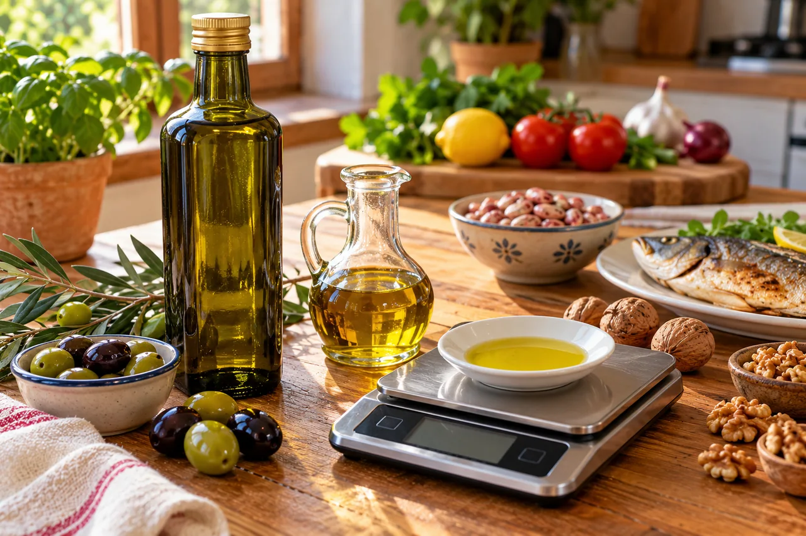

RUBRICA 08 · GUIDA 07 · 23 OTTOBRE 2026
Leggere le etichette: carboidrati, zuccheri, sale e allergeni

La confezione può usare scritte grandi come «light», «naturale» o «senza zuccheri aggiunti». Per scegliere bene, però, devi leggere la dichiarazione nutrizionale, la lista ingredienti, gli allergeni e la quantità effettivamente mangiata.
Per confrontare due prodotti usa prima i valori per 100 g o 100 ml. Poi calcola i dati per la tua porzione. Non confrontare direttamente «per porzione» di marche diverse se le porzioni dichiarate hanno pesi differenti.
1. Cosa deve indicare la dichiarazione nutrizionale?
Il regolamento UE 1169/2011 richiede, per la grande maggioranza degli alimenti preimballati, energia in kJ e kcal, grassi e acidi grassi saturi, carboidrati e zuccheri, proteine e sale. I valori obbligatori sono espressi per 100 g o 100 ml. Le indicazioni per porzione possono essere aggiuntive, ma non sostituiscono quelle per 100 g/100 ml.
Esistono eccezioni alla dichiarazione nutrizionale obbligatoria, per esempio per determinate categorie di prodotti; non significa che ogni alimento in vendita abbia necessariamente la medesima tabella.
2. «Carboidrati» non significa «di cui zuccheri»
Il valore «carboidrati» comprende gli zuccheri e gli altri carboidrati metabolizzabili indicati dalle regole europee. La riga «di cui zuccheri» ne rappresenta una parte, non una quantità aggiuntiva da sommare. Per esempio se trovi «carboidrati 28 g, di cui zuccheri 5 g», il totale non è 33 g: resta 28 g.
Una dicitura «senza zuccheri aggiunti» non implica zero carboidrati o zero calorie. Anche alimenti senza saccarosio aggiunto possono contenere amido o zuccheri naturalmente presenti. Non dedurre il potenziale effetto sulla glicemia dal solo slogan frontale.
3. Come interpretare il sale
In etichetta europea il sale è il dato obbligatorio, anche se il produttore non ha aggiunto direttamente sale da cucina: il valore segue il contenuto di sodio. Il rapporto regolamentare convenzionale è sale = sodio × 2,5.
Esempio matematico inventato: 0,4 g di sodio corrispondono convenzionalmente a 1,0 g di sale. Se il prodotto reale indica 0,8 g di sale per 100 g e ne mangi 150 g, il sale della porzione è 1,2 g.
Un alimento poco dolce può essere molto salato; per leggere il profilo nutrizionale bisogna considerare più di una riga.
4. Lista ingredienti e quantità effettiva
La lista ingredienti segue generalmente un ordine decrescente di peso al momento dell'uso nella fabbricazione, con regole ed eccezioni specifiche. La dimensione della confezione non coincide con la porzione che mangi. In caso di conserve verifica anche il peso sgocciolato, quando indicato.
Esercizio inventato: una confezione dichiara per 100 g: 20 g di carboidrati, 150 kcal e 0,5 g di sale. Se consumi 160 g, il totale è 32 g di carboidrati, 240 kcal e 0,8 g di sale. Si calcola ogni dato come valore per 100 g × 160 ÷ 100.
5. Gli allergeni non sono soltanto una nota secondaria
Il regolamento 1169/2011 prevede l'evidenziazione nella lista ingredienti degli allergeni contemplati nell'allegato II, con un carattere che li distingua dagli altri ingredienti. Vi rientrano, fra gli altri, cereali con glutine, crostacei, uova, pesce, arachidi, soia, latte, frutta a guscio e sedano.
Per chi ha un'allergia, non basta guardare la foto sulla confezione. Leggi la lista, gli eventuali avvisi sulle contaminazioni e chiedi chiarimenti quando necessario. Anche gli alimenti venduti non preimballati sono soggetti a obblighi informativi sugli allergeni, con modalità che possono differire.
6. Il prezzo migliore non coincide sempre con il pacco più economico
Per confrontare offerte guarda il prezzo al kg o al litro e la quantità che riuscirai davvero a consumare. Se compri un barattolo di legumi, possono contare peso netto totale e peso scolato. Non inventare equivalenze fra peso crudo, cotto e scolato.
Un cartellino promozionale può variare nel tempo: annota il negozio, il prezzo e la data se vuoi pubblicare un confronto verificabile. Per i costi di ricetta, somma i costi effettivi degli ingredienti e dividi per le porzioni ottenute.
7. Una tabella breve da usare al supermercato
| Cosa leggere | Perché serve |
|---|---|
| Grammi consumati | Per calcolare la quantità reale |
| Carboidrati per 100 g | Per il totale dei carboidrati della porzione |
| «Di cui zuccheri» | È incluso nei carboidrati, non da sommare |
| Energia per 100 g | Per stimare le kcal della porzione |
| Sale per 100 g | Per tenere conto del consumo di sale |
| Allergeni evidenziati | Per identificare ingredienti potenzialmente pericolosi |
| Peso sgocciolato / prezzo | Per confrontare la parte effettivamente disponibile |
8. Controlla di avere capito
«Carboidrati 22 g, di cui zuccheri 7 g». Quanti carboidrati totali contiene il prodotto nella quantità indicata?
Mostra la risposta
22 g, non 29 g. I 7 g di zuccheri sono già compresi nei carboidrati totali.
Un prodotto dichiara 180 kcal per 100 g e ne mangi 250 g. Quante kcal consumi?
Mostra la risposta
180 × 250 ÷ 100 = 450 kcal. L'esempio è matematico, non un prodotto reale.
Fonti, responsabilità e limiti
Controllo documentale: 23 ottobre 2026. Fonti normative primarie; gli esempi sono inventati per mostrare il calcolo. Non è stata effettuata revisione legale o dietistica indipendente.
- Commissione europea — Nutrition labelling
- Regolamento (UE) 1169/2011, allegato II, informazioni per i consumatori
- Ministero della Salute — Etichettatura
- Per Me — Metodo editoriale
Torna alla rubrica Dieta mediterranea
Vai alla pagina Facebook Per Me per scrivere
Nei commenti pubblici non condividere referti, dati sanitari o credenziali.